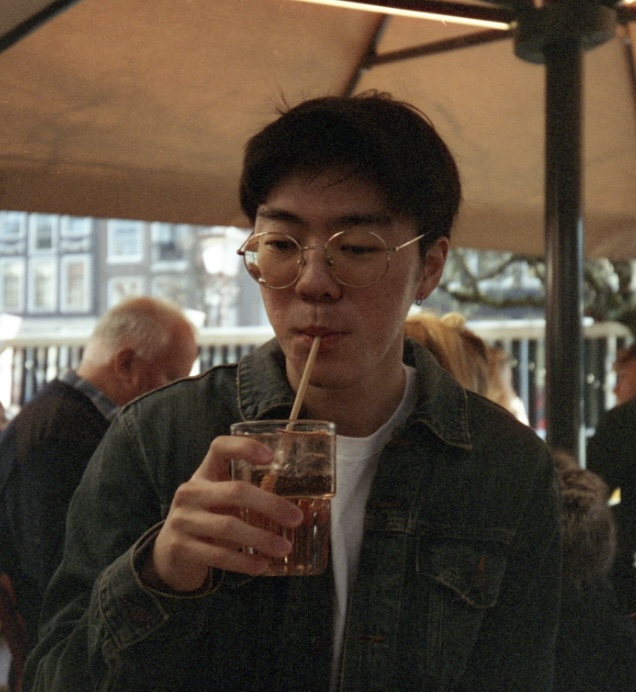

Hello, I'm
DANIEL
PARK
Engineer, Developer, Designer
const developer = {
name: 'Daniel Park',
skills: ['C', 'C++', 'Python',
'TypeScript', 'STM32'],
hardWorker: true,
quickLearner: true
openToWork: true
};Architect through Hardware,
Implement through Software.
Hi, I'm Daniel Park. I am a Computer Engineering Student who blends low-level system logic, real-time microcontrollers, and hardware-software workflows.
University of Michigan / Computer Engineering. Built a strong foundation in digital logic, circuit design, and low-level system architecture.
Embedded Systems. Building real-time applications and multi-node hardware setups through clean, efficient C/C++ code.
High-performance, bare-metal systems infused with precise, deterministic details.

/* Daniel Park, 2026 */
Projects
Experience
Full-Stack Engineer — Crateble
Developed automated regression testing suites and built full-stack software features across frontend and backend systems.
Skills
Languages: C, C++, Python, Verilog, ARM Assembly, JavaScript
Hardware: STM32, I2C, UART, PWM, Logic Analyzers, Oscilloscopes
Resume
Download my full resume or view technical details on GitHub.
Contact
Email: danielpk@umich.edu
GitHub: github.com/danielpark643